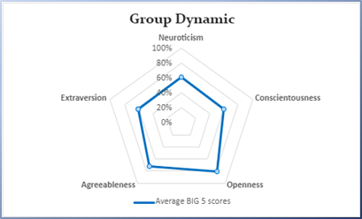
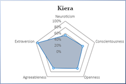
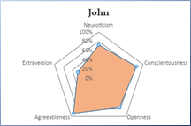
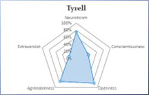
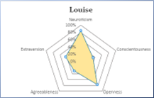
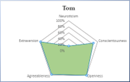

Team Profile
Louise Roser
- Test 1 (Myers Briggs): INTP
- Test 2 (The Big Five): N -85, O-77, E-44, C-35, A-31
- Test 3 (Learning Styles): Visual
John Wakelin
- Test 1 (Myers Briggs): INTP
- Test 2 (The Big Five): N –72, O –76, E –47, C –85, A –92
- Test 3 (Learning Styles): Visual
Tyrell Toomey
- Test 1 (Myers Briggs): INTP-T
- Test 2 (The Big Five): O-85%, C-35%, E-21%, A-79%, N-75%
- Test 3 (Learning Styles): Tactile
Kiera Kruttschnitt
- Test 1 (Myers Briggs): ENFP-A / ENFP-T
- Test 2 (The Big Five): N-54, O-67%, E-94%, C-60%, A-65%
- Test 3 (Learning Styles): Tactile
Thomas O'Connor
- Test 1 (Myers Briggs): ENFP-A
- Test 2 (The Big Five): N-17, O-100, E-99, C-85, A-96
- Test 3 (Learning Styles): Verbal
Myers Briggs
3 Analyst / Logician types. These types possess a vigorous intellect and offer unique perspectives. They seek stimulation intellectually and need freedom to pursue their ideas. They particularly seek opportunities to solve complex puzzles. A logician will do well in collaboration with others. They come up with insights and ideas rapidly, and may feel annoyed if forced to slow down and work out how these ideas are best implemented. In the longer term however, logicians can find better success when teams help them to take their time with these new ideas.
2 Diplomat / Campaigner Types. These types like freedom and time to explore new ideas. They are open to trying new ways of doing things or changes in trajectory when necessary. Like any of the other personality types, Campaigners do suffer some frustrations. The most prominent of these is usually frustration at being micromanaged. They find joy in trying their hand at new projects, however as time wears on they are prone to losing interest and often find it difficult to stay motivated and avoid seeking new projects to excite them.
Indications from Myers Briggs tests:
The INTP type is generally private and very independent. This type prefers a logical approach to problems and people alike. Counter to this the ENFP type is characterised by being quick and impulsive, and loves to collaboratively devise new ways to approach problems. The group needs to be aware of this difference in approach to problem solving as there is a risk that ENFP types will misread independence as disengagement. Conversely INTP types may misinterpret an ENFPs impulsive approach as inefficient or illogical. While INTP is likely to be motivated by the task at hand and work consistently toward completion, ENFPs are generally motivated by connection with the people involved and likely to lose interest once the initial shine has worn off a project. This difference can be a strength however, as constant collaboration can renew interest for ENFPs, and logically break down next steps for the benefit of INTP types.
The Myers Briggs test tests do provide interesting insights into group member’s personalities and are potentially useful tools to better understand each other and avoid weaknesses. But they are not necessarily an accurate summary of a complete person, a complete group, nor of their potential for adaptation to the collaborative environment.
Learning Styles
The Learning styles test results show the smallest variation between group members of the three tests. Two members with Visual Learning style will be best suited to communication of ideas in a visual format and should be well placed if they can contribute to visual aspects of the project. Two members indicate Tactile learning style which, while limited in somewhat by the format, will be well suited to constructive and substantive tasks within the project. One member demonstrating a verbal/auditory learning style should be suited to understanding through verbal descriptions and be comfortable in meetings and communication with other team members.
Big 5 Personality Test
The group average is well balanced, with high scores overall in the agreeableness and openness categories. This indicates that the team should have little issue sharing ideas and agreeing on a path forward. Conscientiousness is notably the groups lowest average score; this trait may be a stumbling block as it may slow progress if the team does not keep a firm schedule or agenda.
Individually each team member exhibits a high score in a different dominant personality type. This is generally positively regarded, as teams with a wider range of personality types will offer different strengths and value to the team. (Harper, 2019) Team members with higher Neuroticism scores provide structure for the rest of the team to follow and work within. Those with higher Openness scores should contribute to a welcoming team environment, and originality of ideas or insights. Higher Extraversion in some members should facilitate constant sharing of progress and provide a conduit between different elements of a project. Team members with high Conscientiousness scores should also help to keep the project progressing on schedule. Those with high Agreeableness scores will be able to work well with systems outlined by others and be good at following through on delegated tasks.
Overall, this team composition indicates a well-rounded group, with few lacking areas. Provided a good schedule of progress is kept and all members of the team are kept informed and engaged by their peers, the team should work very well together.
Ideal Jobs
Compare and contrast the ideal jobs for each person in the group. This may have changed due to feedback from Assignment 1. What common elements are there, if any? What differentiates each position from the others, if anything? How similar or different are your career plans across the group? It can be tackled in numerous ways in writing in visual elements. A concise coverage/analysis/conclusion covering all would be good. Strongly recommend a table presentation of comparison data. As it is very easy to highlight a lot of information, and simple for others to read and interpret too.